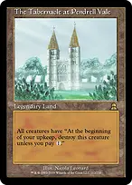
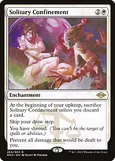
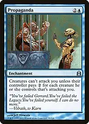
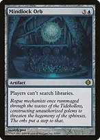
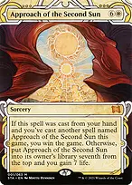

A defensive prison deck by zzwang. Keep Shorikai uncrewed to draw through creature hate, assemble the relevant locks, then finish with artifact abilities, Mechanized Production or Approach of the Second Sun.
Private house Bracket 3.5: the Game Changer cap is three, filled by Humility, Rhystic Study, and The Tabernacle at Pendrell Vale. The earlier four-Game-Changer exception has been removed. No mass land denial or extra-turn chains. Humility, Forcefield and The Millennium Calendar stay.
Draw and mana

Unwinding Clock
untaps your artifacts during each other player's untap step. With a mana rock available, this supports activations on opposing turns too. Each activation still costs mana.

Bender's Waterskin
supplies mana and untaps during every other player's untap step. It helps fund repeated activations but does not untap Shorikai itself.

Voltaic Key
pay {1} and tap to untap an artifact. Budget another {1} for the Shorikai activation it enables.

Manifold Keyanother untap for Shorikai or a finisher. It cannot target itself.

Mystic Remora
another independent draw source; weigh its increasing upkeep against developing your board.
There are 37 lands plus three spell/land MDFCs and eleven mana rocks. Ten rocks cost at most two mana. Maze of Ith and The Tabernacle at Pendrell Vale produce no mana; the other 35 lands supply or find mana before MDFCs. The basics are four Plains and three Islands. Budget {1}{W} for each Luminarch Ascension Angel alongside development, Shorikai activations and creature upkeep payments.
Padeem and Humility
Padeem draws one card on your upkeep if you control an artifact with the greatest mana value among all artifacts on the battlefield; ties count. That condition must hold both as the upkeep begins and when the trigger resolves. Solitary Confinement skips the draw step, not this draw; you can put Padeem's trigger above Confinement's upkeep trigger to draw before discarding. The draw is conditional, so keep other engines available.

Cursed Totem
stops activated abilities of creatures, including creature mana abilities. Padeem's static protection and triggered draw work through Totem alone; uncrewed Shorikai also keeps working.

Torpor Orbcreatures entering do not cause abilities to trigger. It does not stop Padeem's static protection or upkeep trigger, or suppress Rest in Peace's own entry trigger.
Defensive layers

The Tabernacle at Pendrell Valegives each creature an upkeep trigger requiring its controller to pay {1} or destroy that creature. It pressures creature-heavy boards without casting a spell. Your Pilots, Padeem and Witch Enchanter are taxed too; let unneeded Pilots die instead of spending mana on them. Shorikai avoids the trigger when uncrewed as your upkeep begins. This destroys rather than sacrifices, so indestructible creatures can survive nonpayment. Totem and Torpor Orb do not stop these upkeep triggers.
With Humility and an ordinary, noncreature Tabernacle, entry order matters: Tabernacle entering after Humility grants the upkeep ability to the 1/1 creatures; Humility entering after Tabernacle removes that ability while both remain. New creatures entering do not change the relative order of these two effects. Prefer Humility first, then Tabernacle when you want both effects operating. Tabernacle has no mana ability and consumes your land play.

Solitary Confinement
prevents all damage to you and gives you shroud. It skips your draw step and requires a discard each upkeep. Shorikai, Rhystic and Remora still draw because only the draw step is skipped. You may activate an untapped Shorikai in response to the upkeep trigger, then discard as it resolves.
One ordinary Shorikai activation draws two and discards one; Confinement's upkeep consumes another card. That maintains the shield but nets zero cards before other plays. Clock, Keys, Plan and independent draw keep you progressing. Without a working draw source, treat Confinement as temporary. Letting it go during upkeep allows your normal draw step that turn.
Confinement does not protect your permanents, stop untargeted life loss or prevent alternate wins.

Forcefieldretained as backup. Pay {1} to reduce the next combat damage to you from an unblocked creature of your choice to one. It does not protect your planeswalkers or cover every attacker with one activation.

Propagandaa second attack tax that stacks with Prison. It likewise protects you rather than your planeswalkers.
Luminarch Ascension
Solitary Confinement prevents all damage to you, City of Brass included, so only paying life can stop the counters. While you are charging it, don't crack Flooded Strand, Marsh Flats, Polluted Delta or Windswept Heath, tap Mana Confluence, or pay for Hallowed Fountain on an opponent's turn.
Humility turns the Angels into vanilla 1/1s without flying, and then Moat stops them attacking. Make and swing with Angels while Humility is off the table, or win another way while it's on. The Tabernacle at Pendrell Vale charges {1} for each Angel every upkeep.
Spell restrictions
Searches, graveyards and abilities

Mindlock Orbstops everyone's searches, including your four fetches, Idyllic Tutor, Whir and Tezzeret's search. Fetch and tutor before deploying it. Shorikai and Fomori Vault can still draw or look at cards without searching.

Grafdigger's Cagestops creature cards entering from graveyards/libraries and spells being cast from those zones. It does not stop all graveyard abilities or noncreature artifact/enchantment reanimation.

Liquimetal Torqueprimarily a mana rock. Its other ability can temporarily make one of your nonland permanents an artifact for Padeem's protection while Padeem is active.
Win conditions

Helm of Obediencewith Rest in Peace active, X=1 exiles an opponent's entire library. They normally lose on their next attempted draw, not immediately. Repeat for each opponent using paid activations and the untap engine.

The Millennium Calendargains counters from permanents untapped during YOUR untap step. Pay {2} and tap it to double its counters. At 1,000 or more its trigger sacrifices it and makes each opponent lose 1,000 life. Clock and Plan give extra activation opportunities, not natural counter triggers on opponents' untaps.
From fifteen counters, seven doublings reach 1,920. Those activations cost fourteen mana plus the required untaps. The legend rule puts an extra legendary permanent into the graveyard rather than sacrificing it; a fresh Calendar copy does not inherit counters.

Monument to Enduranceeach discard offers a mode not chosen that turn. The drain hits EACH opponent for three once per turn. Discarding on all four turns in a normal round can drain each opponent for twelve; more discards in one turn cannot repeat that mode. Confinement's upkeep discard supplies a trigger too.
These artifact abilities can win under Rule of Law and Arcane Laboratory once deployed. Choose a finish you can fund and protect; assembling a prison alone does not guarantee the game.
Save Treasures when pursuing this finish; spending them can leave you below eight. The win is checked during Production's upkeep ability, not immediately when you reach eight artifacts. Shorikai's Pilots are not artifacts and do not count. Copying legendary Shorikai, Calendar or Mox Opal normally forces you to keep only one under the legend rule, so they are poor accumulation targets. This replaces Chain of Vapor's cheap interaction with a slower engine and another way to win through the one-spell limits.

Approach of the Second Sun
an additional noncombat finish. The first resolution normally gains seven life and places it seventh from the top; draw back to it with Shorikai and your other engines, then cast it from your hand again and resolve it to win. Solitary Confinement does not stop Shorikai's draw ability. Budget the full {6}{W} for each cast.
Rule of Law and Arcane Laboratory mean casting the two Approaches on different turns, and normally prevent casting a protection spell on the same turn. Establish Teferi before the winning turn to block opposing counterspells. Avoid shuffling away Approach's known position after the first resolution.
Tutors and sequencing

Otawara, Soaring Citychannel can return your own Mindlock Orb when you need to reopen searches, or bounce an opposing artifact, creature, enchantment or planeswalker. Uncrewed Shorikai does not count as a legendary creature for the discount; Padeem does, even if Humility has removed its abilities.
Keep functional mana, a draw engine and defense suited to the table. Establish sustainable draw before leaning on Confinement. Use fetches and tutors before Orb, budget one spell per turn under Rule of Law effects, and decide whether Padeem's artifact protection or Humility's creature suppression matters more at the current stage.